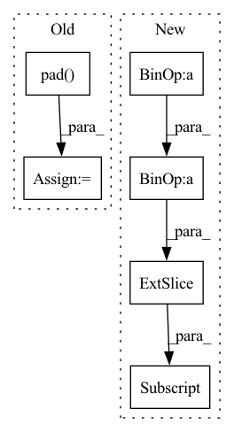

Pattern ID :25444
Before Change
(vert_pad, vert_residual - vert_pad),
(hor_pad, hor_residual - hor_pad),
)
img = np.pad(
img,
padding,
constant_values=0,
)
return img
def encode_image(self, img: Union[Image.Image, np.ndarray]) -> np.array:
After Change
)
// Now crop to a square
y_from = (resized_h - target_size) // 2
x_from = (resized_w - target_size) // 2
img = img[
y_from : y_from + target_size, x_from : x_from + target_size, :
]
return img
def encode_image(self, img: Union[Image.Image, np.ndarray]) -> np.array:In pattern: SUPERPATTERN
Frequency: 3
Non-data size: 6
Instances Fragment ID: 77658865
Project Name: lakeraai/onnx_clip
Commit Name: edb198d8b14891cd88132a1072c01d74e477b6a2
Time: 2023-01-31
Author: vv@lakera.ai
File Name: onnx_clip/preprocessor.py
M Class Name: Preprocessor
N Class Name: Preprocessor
M Method Name: _smart_resize(2)
N Method Name: _smart_resize(2)
M Parent Class:
N Parent Class:
M File Name: onnx_clip/preprocessor.py
N File Name: onnx_clip/preprocessor.py
M Start Line: 33
M End Line: 77
N Start Line: 44
N End Line: 81
Before Change
padding = seq_len - n
mask = default(mask, lambda: torch.ones(b, n, device = device).bool())
x = F.pad(x, (0, 0, 0, padding), value = 0)
mask = F.pad( x, (0, padding), value = False)
qkv = self.to_qkv(x).chunk(3, dim = -1)
q, k, v = map(lambda t: rearrange(t, "b n (h d) -> (b h) n d", h = h), qkv)
After Change
b, n, _, h, img_size, axis, seq_len, device = *x.shape, self.heads, self.image_size, self.axis, self.seq_len, x.device
img_seq_len = img_size ** 2
text_len = seq_len + 1 - img_seq_len
// padding
padding = seq_len - n + 1
mask = default(mask, lambda: torch.ones(b, text_len, device = device).bool())
x = F.pad(x, (0, 0, 0, padding), value = 0)
mask = mask[:, :text_len]
// derive queries / keys / values
qkv = self.to_qkv(x).chunk(3, dim = -1) Fragment ID: 77658854
Project Name: lucidrains/dalle-pytorch
Commit Name: c27f48c4373942167a0cc2ac2238f67af2479fe3
Time: 2021-02-14
Author: lucidrains@gmail.com
File Name: dalle_pytorch/attention.py
M Class Name: SparseAxialCausalAttention
N Class Name: SparseAxialCausalAttention
M Method Name: forward(3)
N Method Name: forward(3)
M Parent Class: nn.Module
N Parent Class: nn.Module
M File Name: dalle_pytorch/attention.py
N File Name: dalle_pytorch/attention.py
M Start Line: 191
M End Line: 241
N Start Line: 201
N End Line: 259
Before Change
// image can attend to all of text
mask = F.pad( mask, (text_len, 0), value = True)
dots_image.masked_fill_(~mask, mask_value)
attn_image = dots_image.softmax(dim = -1)
out_image = einsum("b i j, b i j d -> b i d", attn_image, v_img)After Change
b, n, _, h, img_size, kernel_size, dilation, seq_len, device = *x.shape, self.heads, self.image_size, self.kernel_size, self.dilation, self.seq_len, x.device
img_seq_len = img_size ** 2
text_len = seq_len + 1 - img_seq_len
// padding
padding = seq_len - n + 1
mask = default(mask, lambda: torch.ones(b, text_len, device = device).bool())
x = F.pad(x, (0, 0, 0, padding), value = 0)
mask = mask[:, :text_len]
// derive query / keys / values
qkv = self.to_qkv(x).chunk(3, dim = -1) Fragment ID: 77658856
Project Name: lucidrains/dalle-pytorch
Commit Name: c27f48c4373942167a0cc2ac2238f67af2479fe3
Time: 2021-02-14
Author: lucidrains@gmail.com
File Name: dalle_pytorch/attention.py
M Class Name: SparseConvCausalAttention
N Class Name: SparseConvCausalAttention
M Method Name: forward(3)
N Method Name: forward(3)
M Parent Class: nn.Module
N Parent Class: nn.Module
M File Name: dalle_pytorch/attention.py
N File Name: dalle_pytorch/attention.py
M Start Line: 92
M End Line: 154
N Start Line: 92
N End Line: 164